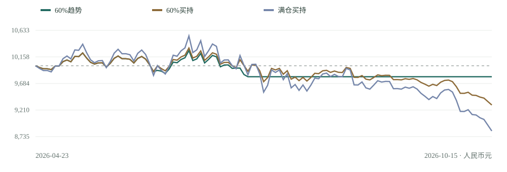

低波动取向 / 现金规则已冻结
防守方案
¥10,000独立初始本金
本期100%持现；不自动转入权益。
现金 100% · 持仓 0 · 费用 ¥0
发布后业绩：暂无
独立账本已准备，成功发布后按规则生效。
A 股研究实验室 / 第 001 期
短窗实验不足以支持权益仓位启用。防守方案和均衡研究候选本期均持有现金，等待更完整的数据与固定规则验证。
低波动取向 / 现金规则已冻结
¥10,000独立初始本金
本期100%持现；不自动转入权益。
现金 100% · 持仓 0 · 费用 ¥0
发布后业绩：暂无
独立账本已准备，成功发布后按规则生效。
权益上限60%候选 / 尚未准入
¥10,000独立初始本金
本期100%持现；趋势规则仅用于研究。
现金 100% · 持仓 0 · 费用 ¥0
发布后业绩：暂无
候选权益策略未验证；不把回测作为账户成绩。
上一期建议兑现
暂无发布后评价样本
这是首份正式报告，没有上一期交易可评价。
计划最早 10月16日 09:30 生效，前提是此前完成发布核验。后续周评仅在手动唤醒时补算。
以下仅为公司行动完整性受限条件下的历史诊断数值。116个交易日、单一ETF、6笔趋势成交不能证明长期优势，也不是发布后业绩。
| 规则 | 扣成本收益 | 最大回撤 | 成交笔数 | 佣金合计 | 压力成本收益 |
|---|---|---|---|---|---|
| 60% 趋势过滤 | -1.96% | -4.55% | 6 | ¥30.00 | -3.27% |
| 60% 买入持有 | -7.01% | -9.87% | 1 | ¥5.00 | -7.23% |
| 满仓买入持有 | -11.65% | -16.12% | 1 | ¥5.00 | -12.05% |
| 不计息现金 | 0.00% | 0.00% | 0 | ¥0.00 | 0.00% |

510300；暖机自2026-01-20起，评价区间2026-04-23至2026-10-15，共116个交易日。基础费用：每边 max(¥5, 成交额×0.03%)，滑点 5bp。压力情景：佣金 0.3%，每边滑点 20bp。均为假设，非用户实际费率。
两账户均不提交买单、卖单、申赎或逆回购。现金不计利息，无需板块交易权限。
最早 2026-10-16 09:30 生效，建议评价期至 2026-10-23 15:00（北京时间）。到期后继续持现，直至新版本成功发布。
补齐公司行动与交易日历证据，验证最低佣金敏感性，再决定是否冻结权益策略的前瞻模拟。
现金仍有机会成本和购买力风险。若发布失败、规则哈希异常或账户状态不一致，本报告不得启动任何交易。
资源请求：无。可选专家问题：1 个（小本金成本与前瞻验证）；尚未收到回复。原始交流保留在私有仓库。